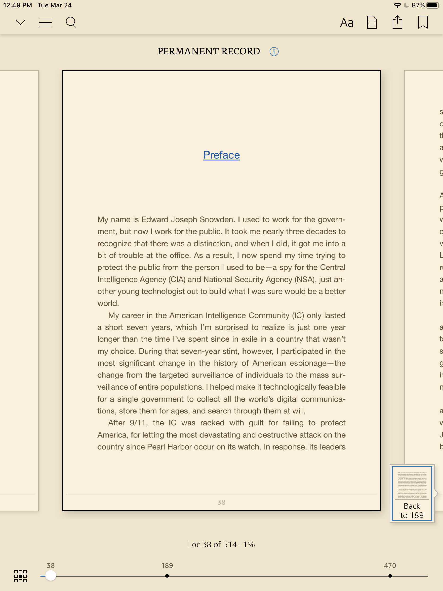
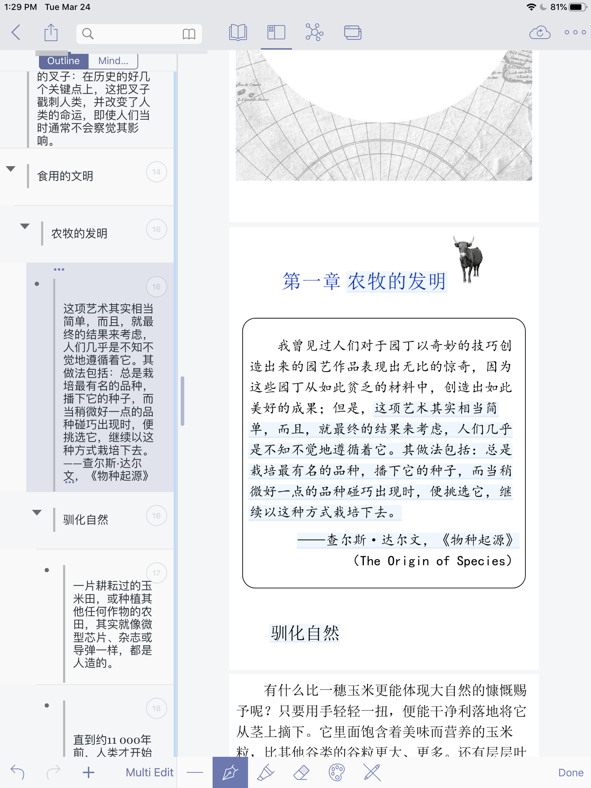
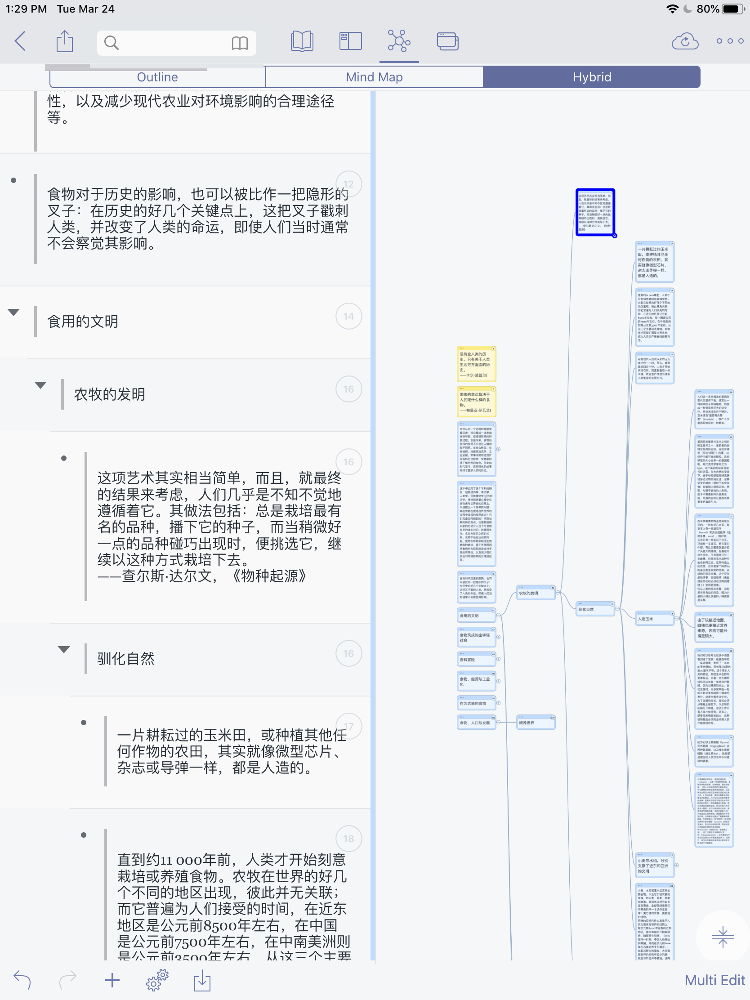

<!DOCTYPE html>
<html lang="en">
<head>
  <meta charset="UTF-8">
<meta name="viewport" content="width=device-width, initial-scale=1, maximum-scale=2">
<meta name="theme-color" content="#222">
<meta name="generator" content="Hexo 4.2.0">
  <link rel="apple-touch-icon" sizes="180x180" href="/images/apple-touch-icon-next.png">
  <link rel="icon" type="image/png" sizes="32x32" href="/images/favicon-32x32-next.png">
  <link rel="icon" type="image/png" sizes="16x16" href="/images/favicon-16x16-next.png">
  <link rel="mask-icon" href="/images/logo.svg" color="#222">

<link rel="stylesheet" href="/css/main.css">


<link rel="stylesheet" href="/lib/font-awesome/css/font-awesome.min.css">

<script id="hexo-configurations">
    var NexT = window.NexT || {};
    var CONFIG = {"hostname":"my1219.today","root":"/","scheme":"Muse","version":"7.7.1","exturl":false,"sidebar":{"position":"right","display":"hide","padding":18,"offset":12,"onmobile":false},"copycode":{"enable":false,"show_result":false,"style":null},"back2top":{"enable":true,"sidebar":false,"scrollpercent":false},"bookmark":{"enable":false,"color":"#222","save":"auto"},"fancybox":false,"mediumzoom":false,"lazyload":false,"pangu":false,"comments":{"style":"tabs","active":null,"storage":true,"lazyload":false,"nav":null},"algolia":{"hits":{"per_page":10},"labels":{"input_placeholder":"Search for Posts","hits_empty":"We didn't find any results for the search: ${query}","hits_stats":"${hits} results found in ${time} ms"}},"localsearch":{"enable":true,"trigger":"auto","top_n_per_article":-1,"unescape":false,"preload":false},"motion":{"enable":true,"async":false,"transition":{"post_block":"fadeIn","post_header":"slideDownIn","post_body":"slideDownIn","coll_header":"slideLeftIn","sidebar":"slideUpIn"}},"path":"search.xml"};
  </script>

  <meta name="description" content="放在开始的一点无关话题: 因为我真的是个想法可能每秒钟都在改变的人, 写完的东西也许第二天就觉得有些地方需要更改了, 于是决定未来的文章都在标题后面加上版本LOL. 这样可以更好的更新并记录我想法的变迁LOL.  我近期的阅读状况是纸书电子书五五开. 纸书对我来说仍然无可替代, 纸书不仅仅意味着更”像书”的更”传(jing)统(dian)”的阅读体验以及这样的阅读体验带来的一切优势, 也意味着更大">
<meta property="og:type" content="article">
<meta property="og:title" content="电子书阅读姿势大赏1.0(花式赞美Kindle)">
<meta property="og:url" content="https://my1219.today/2020/03/23/eread/index.html">
<meta property="og:site_name" content="ALL UNDISCOVERED">
<meta property="og:description" content="放在开始的一点无关话题: 因为我真的是个想法可能每秒钟都在改变的人, 写完的东西也许第二天就觉得有些地方需要更改了, 于是决定未来的文章都在标题后面加上版本LOL. 这样可以更好的更新并记录我想法的变迁LOL.  我近期的阅读状况是纸书电子书五五开. 纸书对我来说仍然无可替代, 纸书不仅仅意味着更”像书”的更”传(jing)统(dian)”的阅读体验以及这样的阅读体验带来的一切优势, 也意味着更大">
<meta property="og:locale" content="en_US">
<meta property="og:image" content="https://my1219.today/2020/03/23/eread/1.jpeg">
<meta property="og:image" content="https://my1219.today/2020/03/23/eread/2.PNG">
<meta property="og:image" content="https://my1219.today/2020/03/23/eread/3.PNG">
<meta property="article:published_time" content="2020-03-23T20:07:23.000Z">
<meta property="article:modified_time" content="2020-03-24T22:00:05.862Z">
<meta property="article:author" content="Ms Pauli">
<meta property="article:tag" content="Apple">
<meta property="article:tag" content="Tools">
<meta property="article:tag" content="Review">
<meta property="article:tag" content="Kindle">
<meta property="article:tag" content="iBook">
<meta property="article:tag" content="Marginnote">
<meta name="twitter:card" content="summary">
<meta name="twitter:image" content="https://my1219.today/2020/03/23/eread/1.jpeg">

<link rel="canonical" href="https://my1219.today/2020/03/23/eread/">


<script id="page-configurations">
  // https://hexo.io/docs/variables.html
  CONFIG.page = {
    sidebar: "",
    isHome: false,
    isPost: true
  };
</script>

  <title>电子书阅读姿势大赏1.0(花式赞美Kindle) | ALL UNDISCOVERED</title>
  


  <noscript>
  <style>
  .use-motion .brand,
  .use-motion .menu-item,
  .sidebar-inner,
  .use-motion .post-block,
  .use-motion .pagination,
  .use-motion .comments,
  .use-motion .post-header,
  .use-motion .post-body,
  .use-motion .collection-header { opacity: initial; }

  .use-motion .site-title,
  .use-motion .site-subtitle {
    opacity: initial;
    top: initial;
  }

  .use-motion .logo-line-before i { left: initial; }
  .use-motion .logo-line-after i { right: initial; }
  </style>
</noscript>

<link rel="alternate" href="/atom.xml" title="ALL UNDISCOVERED" type="application/atom+xml">
</head>

<body itemscope itemtype="http://schema.org/WebPage">
  <div class="container use-motion">
    <div class="headband"></div>

    <header class="header" itemscope itemtype="http://schema.org/WPHeader">
      <div class="header-inner"><div class="site-brand-container">
  <div class="site-meta">

    <div>
      <a href="/" class="brand" rel="start">
        <span class="logo-line-before"><i></i></span>
        <span class="site-title">ALL UNDISCOVERED</span>
        <span class="logo-line-after"><i></i></span>
      </a>
    </div>
        <p class="site-subtitle">I am here, somewhere</p>
  </div>

  <div class="site-nav-toggle">
    <div class="toggle" aria-label="Toggle navigation bar">
      <span class="toggle-line toggle-line-first"></span>
      <span class="toggle-line toggle-line-middle"></span>
      <span class="toggle-line toggle-line-last"></span>
    </div>
  </div>
</div>


<nav class="site-nav">
  
  <ul id="menu" class="menu">
        <li class="menu-item menu-item-home">

    <a href="/" rel="section"><i class="fa fa-fw fa-home"></i>Home</a>

  </li>
        <li class="menu-item menu-item-tags">

    <a href="/tags/" rel="section"><i class="fa fa-fw fa-tags"></i>Tags</a>

  </li>
        <li class="menu-item menu-item-categories">

    <a href="/categories/" rel="section"><i class="fa fa-fw fa-th"></i>Categories</a>

  </li>
        <li class="menu-item menu-item-archives">

    <a href="/archives/" rel="section"><i class="fa fa-fw fa-archive"></i>Archives</a>

  </li>
        <li class="menu-item menu-item-podcast">

    <a href="https://weijingzhidi.fireside.fm/" rel="noopener" target="_blank"><i class="fa fa-fw fa-podcast"></i>podcast</a>

  </li>
      <li class="menu-item menu-item-search">
        <a role="button" class="popup-trigger"><i class="fa fa-search fa-fw"></i>Search
        </a>
      </li>
  </ul>

</nav>
  <div class="site-search">
    <div class="popup search-popup">
    <div class="search-header">
  <span class="search-icon">
    <i class="fa fa-search"></i>
  </span>
  <div class="search-input-container">
    <input autocomplete="off" autocorrect="off" autocapitalize="off"
           placeholder="Searching..." spellcheck="false"
           type="search" class="search-input">
  </div>
  <span class="popup-btn-close">
    <i class="fa fa-times-circle"></i>
  </span>
</div>
<div id="search-result"></div>

</div>
<div class="search-pop-overlay"></div>

  </div>
</div>
    </header>

    
  <div class="back-to-top">
    <i class="fa fa-arrow-up"></i>
    <span>0%</span>
  </div>


    <main class="main">
      <div class="main-inner">
        <div class="content-wrap">
          

          <div class="content">
            

  <div class="posts-expand">
      
  
  
  <article itemscope itemtype="http://schema.org/Article" class="post-block " lang="en">
    <link itemprop="mainEntityOfPage" href="https://my1219.today/2020/03/23/eread/">

    <span hidden itemprop="author" itemscope itemtype="http://schema.org/Person">
      <meta itemprop="image" content="/images/pauli.JPG">
      <meta itemprop="name" content="Ms Pauli">
      <meta itemprop="description" content="">
    </span>

    <span hidden itemprop="publisher" itemscope itemtype="http://schema.org/Organization">
      <meta itemprop="name" content="ALL UNDISCOVERED">
    </span>
      <header class="post-header">
        <h1 class="post-title" itemprop="name headline">
          电子书阅读姿势大赏1.0(花式赞美Kindle)
        </h1>

        <div class="post-meta">
            <span class="post-meta-item">
              <span class="post-meta-item-icon">
                <i class="fa fa-calendar-o"></i>
              </span>
              <span class="post-meta-item-text">Posted on</span>

              <time title="Created: 2020-03-23 13:07:23" itemprop="dateCreated datePublished" datetime="2020-03-23T13:07:23-07:00">2020-03-23</time>
            </span>
              <span class="post-meta-item">
                <span class="post-meta-item-icon">
                  <i class="fa fa-calendar-check-o"></i>
                </span>
                <span class="post-meta-item-text">Edited on</span>
                <time title="Modified: 2020-03-24 15:00:05" itemprop="dateModified" datetime="2020-03-24T15:00:05-07:00">2020-03-24</time>
              </span>
            <span class="post-meta-item">
              <span class="post-meta-item-icon">
                <i class="fa fa-folder-o"></i>
              </span>
              <span class="post-meta-item-text">In</span>
                <span itemprop="about" itemscope itemtype="http://schema.org/Thing">
                  <a href="/categories/Tools/" itemprop="url" rel="index">
                    <span itemprop="name">Tools</span>
                  </a>
                </span>
            </span>

          

        </div>
      </header>

    
    
    
    <div class="post-body" itemprop="articleBody">

      
        <p>放在开始的一点无关话题: 因为我真的是个想法可能每秒钟都在改变的人, 写完的东西也许第二天就觉得有些地方需要更改了, 于是决定未来的文章都在标题后面加上版本LOL. 这样可以更好的更新并记录我想法的变迁LOL.</p>
<hr>
<p>我近期的阅读状况是纸书电子书五五开. 纸书对我来说仍然无可替代, 纸书不仅仅意味着更”像书”的更”传(jing)统(dian)”的阅读体验以及这样的阅读体验带来的一切优势, 也意味着<a href="https://yitianshijie.net/78" target="_blank" rel="noopener">更大的屏幕</a>, 其存在本身已经足够有意义了. 我很少忧虑”便携性”这件事, 对大多数我可能会读书的场合, 很少会觉得多带一两本纸书是一件麻烦事. 但是考虑到未来可能还是会经常搬家(现在懂得了人为什么会想要买房子), 依然不能”随心所欲”的买纸书. </p>
<p>我个人电子书的轻量阅读仍然以<a href="https://www.amazon.com/Kindle-eBooks/b?ie=UTF8&node=154606011" target="_blank" rel="noopener">Kindle</a>为主, <a href="https://www.apple.com/apple-books/" target="_blank" rel="noopener">iBook</a>为辅, 最近开始使用<a href="https://readmoo.com/" target="_blank" rel="noopener">readmoo</a>作为一些补充, (我其实还会去<a href="https://m.qidian.com/" target="_blank" rel="noopener">起点</a>或者<a href="https://www.jjwxc.net/" target="_blank" rel="noopener">晋江</a>看小说? 但最近很少有时间去看了lol); 重量阅读以<a href="https://www.marginnote.com/" target="_blank" rel="noopener">Marginnote</a>为主, iBook做辅助. </p>
<h1 id="Kindle-5-5"><a href="#Kindle-5-5" class="headerlink" title="Kindle 5/5"></a>Kindle 5/5</h1><p>无论是app还是阅读器, Kindle对我来说始终是无可取代的最喜爱的电子阅读工具. 我的两个Kindle, <a href="https://www.amazon.com/Amazon-Kindle-Oasis-eReader-with-Leather-Charging-Cover/dp/B00REQKWGA" target="_blank" rel="noopener">oasis</a> 连接了我的美亚账户, <a href="https://www.amazon.com/Kindle-Paperwhite-Touch-light/dp/B007OZNZG0" target="_blank" rel="noopener">paperwhite</a>连接了我的中亚账户. 虽然我依然赞同paperwhite是Kindle阅读器中<a href="https://zh.wikipedia.org/zh-hans/%E6%80%A7%E5%83%B9%E6%AF%94" target="_blank" rel="noopener">性价比</a>最高的选择, 对大部分人的使用完全足够, 但二者带来的体验上的差距对我个人而言还是十分显著的, 如果有一天我把它也<a href="https://www.amazon.com/Kindle-Trade-In/b?ie=UTF8&node=10825010011" target="_blank" rel="noopener">trade-in</a>成oasis也绝对不会奇怪. </p>
<h2 id="Kindle阅读器"><a href="#Kindle阅读器" class="headerlink" title="Kindle阅读器"></a>Kindle阅读器</h2><p>就阅读器而言, 它尽可能模拟了阅读纸书的视觉效果以及”封闭/私密”感, 并仍然保持了一些电子阅读的优势: </p>
<h3 id="书库优势"><a href="#书库优势" class="headerlink" title="书库优势"></a>书库优势</h3><p>虽然Kindle的书库优势并不总是十分显著, 但仍然可以满足大部分人在大部分时间的阅读. </p>
<p>昨天发现美亚上还有很多<a href="https://www.amazon.com/Ghost-Shell-Vol-1-ebook/dp/B01NA69LSR/ref=sr_1_1?dchild=1&keywords=ghost+in+the+shell&qid=1585075035&s=digital-text&sr=1-1" target="_blank" rel="noopener">漫画</a>, 很多(如<a href="https://www.amazon.com/52-Vol-1-Geoff-Johns-ebook/dp/B01EZG38XK/ref=sr_1_1?dchild=1&keywords=new+52&qid=1585075079&s=digital-text&sr=1-1" target="_blank" rel="noopener">新52</a>)还包含在<a href="https://www.amazon.com/kindle-dbs/hz/subscribe/ku?ref_=sv_kstore_2&_encoding=UTF8&shoppingPortalEnabled=true" target="_blank" rel="noopener">Kindle Unlimited</a>里. 而且很有趣的是日漫Kindle版本(在iPad上)基本都是从右往左翻阅, 美漫是从左往右翻阅, 攻壳机动队也是从左往右翻阅.</p>
<h3 id="导出笔记"><a href="#导出笔记" class="headerlink" title="导出笔记"></a>导出笔记</h3><p>美亚账户可以通过直接访问 <a href="https://read.amazon.com/notebook" target="_blank" rel="noopener">https://read.amazon.com/notebook</a> 来获取所有高亮/笔记内容, 笔记内容按书分类, <a href="https://read.amazon.com/" target="_blank" rel="noopener">https://read.amazon.com/</a> 本身就可以网页访问所有在云端的书籍. </p>
<p>不方便通过这种形式获取的笔记可以通过<a href="https://www.clippings.io/" target="_blank" rel="noopener">clippings.io</a>来获取, 同样是按书分类, 对笔记进行编辑也十分方便. 另外, clipping.io支持将笔记按照Excel/PDF/Text/Word导出, 也可以直接发送到<a href="https://evernote.com/" target="_blank" rel="noopener">Evernote</a>或者Kindle. </p>
<h3 id="查阅生词"><a href="#查阅生词" class="headerlink" title="查阅生词"></a>查阅生词</h3><p>Kindle英文书可以开启<a href="https://www.amazon.com/gp/help/customer/display.html?nodeId=201645250" target="_blank" rel="noopener">word wise</a>模式, 开启后会自动识别可能的生词并标出它的含义(可以调整”难度”级别); 同时, 长按单词/句子会自动调出lookup的结果, Kindle会关联到dictionary, wikipedia, 和translation三个页面.</p>
<h3 id="vocabulary-builder"><a href="#vocabulary-builder" class="headerlink" title="vocabulary builder"></a>vocabulary builder</h3><p><a href="https://learnoutlive.com/kindle-vocabulary-builder-anki-flashcards/" target="_blank" rel="noopener">vocabulary builder (oasis/paperwhite/Voyager)</a>是一个我没怎么使用过的但是看起来很有趣的功能, 它会自动收集所有查阅过的词汇, 可以制作flashcard来学习.</p>
<h3 id="typical-time-to-read"><a href="#typical-time-to-read" class="headerlink" title="typical time to read"></a>typical time to read</h3><p>Kindle可以显示完成本章/整本书阅读所需的时间(不一定准确lol). 确切来说, 这并不是一个电子书阅读的”优势”, 而是模拟了<a href="https://itgonglun.com/195" target="_blank" rel="noopener">根据书本厚度预估还需要多少时间读完</a>的纸书阅读体验.</p>
<h3 id="sample"><a href="#sample" class="headerlink" title="sample"></a>sample</h3><p>可以发送样章到Kindle来试阅. 这当然依然远远比不上亲自去书店寻找自己可能感兴趣的书籍, 但是尽量提供了做选择需要的信息. </p>
<p>同时, <a href="https://read.amazon.com/kp/embed?asin=B06WGNPM7V&preview=newtab&linkCode=kpe&ref_=cm_sw_r_kb_dp_NyWDEb7KZ0MBF&reshareId=S2Q99SCN98GJA9GGPSW7&reshareChannel=system" target="_blank" rel="noopener">Embed</a>(<a href="https://read.amazon.com/kp/embed?preview=newtab&linkCode=kpe&ref_=cm_sw_r_kb_dp_IRVDEb70WWY8T&asin=B07F8W9SSJ" target="_blank" rel="noopener">分享样章</a>) 功能可以直接支持在网页查看样章, 也可以讲样章分享给别人(该功能需要登陆网页版亚马逊, 在书页的分享区域中可以找到).</p>
<h3 id="want-to-read-lists"><a href="#want-to-read-lists" class="headerlink" title="want-to-read lists"></a>want-to-read lists</h3><p>Kindle会显示推送过的samples, 关联到亚马逊账号的book list(your lists -&gt; book)以及<a href="https://www.goodreads.com/" target="_blank" rel="noopener">goodreads</a>中的want to read列表. </p>
<h3 id="与goodreads的交互"><a href="#与goodreads的交互" class="headerlink" title="与goodreads的交互"></a>与goodreads的交互</h3><p>除去关联到want to read列表外, 也可以十分方便的将书籍加入到goodreads的profile中(want to read/currently reading/read).</p>
<h3 id="其他细节"><a href="#其他细节" class="headerlink" title="其他细节"></a>其他细节</h3><p>每本书的About This Book页面可以很方便的选择follow author(实际上就是在amazon上follow了这个作者)并且可以看到这个作者的其它作品; About Author页面不仅有作者的基本信息, 也会显示该作者其他的支持kindle的书籍, 可以直接点击跳转到购买页面.</p>
<h2 id="Kindle-App-mobile-ios-端-一点PC-Mac-端"><a href="#Kindle-App-mobile-ios-端-一点PC-Mac-端" class="headerlink" title="Kindle App (mobile(ios)端 + 一点PC(Mac)端)"></a>Kindle App (mobile(ios)端 + 一点PC(Mac)端)</h2><p>除去所有阅读器的优点, iOS端的Kindle也有很多非常优秀的设计细节. 由于我本身不太喜欢在电脑上做长篇阅读, 所以虽然偶尔也会使用mac端kindle, 但是使用不是很频繁.</p>
<h3 id="只在iPad上购买"><a href="#只在iPad上购买" class="headerlink" title="只在iPad上购买"></a>只在iPad上购买</h3><p>在iPad上购买的书籍就只会出现在iPad上. 有些类目的书籍(如漫画), 我只想在iPad上阅读, 如果自动同步到Kindle会让我Kindle的library变得冗杂同时会浪费内存, 这个不同步的设计, 带给我的正面体验更多. 如果真的希望各端都同步, 可以直接去亚马逊网页/app或者Kindle上购买, 也可以在亚马逊网页上管理同步到的设备.</p>
<h3 id="send-to-kindle"><a href="#send-to-kindle" class="headerlink" title="send-to-kindle"></a>send-to-kindle</h3><p>相对应的, 在通过邮件发送一些文件(txt/mobi/pdf)到Kindle时, 也可以通过选择发送到哪个Kindle邮箱来选择发送给所有设备/只发送给iPad设备(your account -&gt; your content and devices -&gt; preferences -&gt; personal document settings -&gt; send-to-kindle e-mail settings -&gt; kindle/ipad address, 发送给Kindle address就会同步到所有设备; 另外, 在personal document settings下面approved personal document e-mail list中需要加入你会用来发送给Kindle的邮箱地址).</p>
<h3 id="collections"><a href="#collections" class="headerlink" title="collections"></a>collections</h3><p><a href="https://www.epubor.com/4-ways-to-create-and-manage-kindle-collections.html" target="_blank" rel="noopener">collections</a>: collections, 即对书本的分类, 实际上在Kindle阅读器, 亚马逊网页, 以及mobile端/PC端都可以进行编辑和管理. 但我个人更喜欢在iPad上进行相关操作. 一方面ios端上的书籍更多(由于有些书籍由于上述两点只在同步到了iPad上), 另一方面操作起来也更加容易. 在设置完分类后, 可以选择对这个类目进行操作: remove/download collection. </p>
<p>同时, 编辑好的collection会同步到云端, 在Kindle阅读器上可以在your library中设置filter: 选择collections选项, 进入collections视图, 就可以同样按类别阅读了.</p>
<h3 id="recommend-this-book"><a href="#recommend-this-book" class="headerlink" title="recommend this book"></a>recommend this book</h3><p>在iPad端长按书籍会调出一些add to collection/select mutiple items等常规选项, 此外也有一些诸如mark as read/book details的特别选项. 特别有讲的是recommend this book选项, 这个选项会调出平时选择share时会调出的页面, 即AirDrop/Messages/其他可分享的app, 但其生成的连接即是上文提到的embed功能会生成的链接, 即会分享一个可以网页阅读sample的sample的链接(<a href="https://read.amazon.com/kp/kshare?asin=B07STQPGH6&id=JTx0Vd_gSAiCKwosCv5Bbw&reshareId=PHGTMRFSG3KZ5Q0SKYXZ&reshareChannel=system" target="_blank" rel="noopener">例子</a>).</p>
<h3 id="进度条上的那些小圆点"><a href="#进度条上的那些小圆点" class="headerlink" title="进度条上的那些小圆点"></a>进度条上的那些小圆点</h3><p>对于一些经常需要来回翻阅的书籍, 电子书的体验迄今无法达到纸质书的体验.</p>
<p><br>Kindle在这上面作出的努力首先是, 点击屏幕调出进度条的页面时, 屏幕中间仍然会显示书页内容(可以让人完全看清其中的内容), 在来回拖动进度条的代表阅读进度(位置)的小圆点时, 书页内容也会跟着前后滑动(变化), 方便人更好的选择要跳到的位置. 这个设计在Kindle阅读器上也相同. </p>
<p>Kindle mobile端的另外一点努力是, 当你选中跳转到某一页面后, 进度条上会在这一页面的位置留下一个小圆点, 同时跳转前最后阅读的页面会同样留下一个标记那个位置的小圆点, 方便跳回(调出调整进度的页面时, 也会在页面的左下角或右下角提供跳转到最近的”小圆点”的选项).</p>
<p>另外, 在同步所有设备的阅读进度上, Kindle会默认同步到阅读的最远端, 但是会在打开书籍同步之前, 询问是否进行这个操作, 防止误判. </p>
<p>但很奇怪的是mac端Kindle没有任何相关设计. </p>
<h3 id="Notes页面"><a href="#Notes页面" class="headerlink" title="Notes页面"></a>Notes页面</h3><p>阅读器同样可以调取notes页面来查看highlight并为其添加note, 并通过选择notes或者contents中的标签/目录跳转, 但我实际很少会在阅读器中来回跳转/查看notes, 最多会拖动进度条来简单查看一些前后的内容, 一般阅读器的notes我会直接在前面导出notes的段落中提到的方法查看/编辑/导出.</p>
<p>mobile端的notes页面, 由于在mobile端做highlight时可以选择颜色, 除去可以查看所有的highlights并为其添加notes/查看书签/查看目录之外, 还可以选择按highlights的颜色查看highlight, 并可以选择单独查看notes.</p>
<p>mac端在以上的设计的基础上, 增加了可以添加flashcards以及将highlights和notes以html的形式导出的功能.</p>
<h3 id="Reading-Insights"><a href="#Reading-Insights" class="headerlink" title="Reading Insights"></a>Reading Insights</h3><p>mobile端的特有功能. 统计了年度阅读完的书籍, 并按月历图统计了哪些天使用了Kindle(mobile) 来阅读, 并按柱状图统计了每个月有多少天进行了阅读.</p>
<h2 id="一些遗憾-不喜爱"><a href="#一些遗憾-不喜爱" class="headerlink" title="一些遗憾/不喜爱"></a>一些遗憾/不喜爱</h2><p>Kindle本身还是十分封闭的系统, 虽然可以通过发邮件等形式将其他途径得到的电子书(mobi/txt/PDF)发送到Kindle, 但一是Kindle并非支持所有格式, 二是还是直接在书库中购买更加方便也能更好的支持正版. 而发送的邮件也有文件大小的限制, 虽然可以通过USB连接直接传输文件, 但是是一项笨拙又不方便同步的操作.</p>
<p>Mac端的Kindle设计上就没有阅读器/mobile端”精巧”, 而且只能导入PDF, 也不方便做在电脑端上传并整理所有书籍的操作.</p>
<p>另外, 虽然阅读器由于硬件及设计原因不适宜做乱涂乱画的操作, 但mobile端, 特别是iPad端(现在iPad也有独立系统啦, 这个只是一个对未来的期待)不能乱涂乱画, 实在有些遗憾, 我始终认为配合<a href="https://www.apple.com/apple-pencil/?afid=p238%7CsraIMFAgF-dc_mtid_1870765e38482_pcrid_378126887195_pgrid_76054337646_&cid=aos-us-kwgo---slid---product-" target="_blank" rel="noopener">Apple Pencil</a>在iPad上乱涂乱画是iPad使用的灵魂.</p>
<p>最后, 我十分厌烦popular highlights的功能, 一定要关闭(会在后面详细讲这个问题).</p>
<h1 id="marginnote-4-5"><a href="#marginnote-4-5" class="headerlink" title="marginnote 4/5"></a>marginnote 4/5</h1><p>主要用来学习使用. 一些比较基础的优点是可以很好的分类书籍, 方便做高亮, 方便乱涂乱画.</p>
<p>之所以特别喜爱它, 是因为高亮/划线的内容可以很方便的分级做导图.</p>
<p><br>高亮的内容会生成一个可编辑的模块(双击模块可进行编辑), 在Outline视图下通过向右/向左拖动, 可以将该模块进行分级, 在MindMap视图下, 会直接生成一个可编辑的导图.<br></p>
<p>同时可以进行制作flashcards(我真的很少会使用flashcards). outline/mindset/book/flashcards可以各自分享到Anki, OmniOuliner, MindManager&amp;iThoughts, Evernote及MS Word. 也可以讲笔记内容和书籍重新导出为PDF格式, 同时可以通过Mail/AirDrop分享笔记.</p>
<p>在学习类/严肃类阅读时, 是十分好用的工具. 但对轻量阅读来讲, 就完全没必要.</p>
<p>另外, Mac端marginnote需要单独购买. 由于我很少会使用电脑阅读长文章, 遑论教辅类书籍, 所以并没有购买mac端. 所有PDF通过iCloud/iBook同步, 然后再在iPad加入Marginnote并在其中整理, 可以说是略有麻烦但不影响整体体验的操作.</p>
<h1 id="ibook-4-5"><a href="#ibook-4-5" class="headerlink" title="ibook 4/5"></a>ibook 4/5</h1><p>iBook对我来说就是为了弥补kindle和marginnote在使用上的不便/无法覆盖的使用的工具. 总体来说, iBook用来管理我的所有PDF和epub文件. </p>
<p>虽然PDF文件我并不都会在iBook上阅读, 但是由于iBook Mac端使用十分顺滑, 并且可以很好的同步到iOS端, 我仍然会通过iBook管理(分类功能同样十分好用), 需要marginnote/kindle阅读的书籍再单独copy到这两个软件上. 而iBook本身对PDF的轻量阅读体验也十分好, 没有冗杂的功能, 但是可以随意乱涂乱画.</p>
<p>而iBook对epub的支持在Mac端和IOS端也十分优秀, 无论是视觉体验还是笔记的查阅与导出, 都十分顺滑. 虽然不支持直接分享到Evernote, 但可以通过发邮件的方式间接分享给Evernote.</p>
<p>而iBook的英文书库也算不错, 虽然我英文书籍的购买也会以kindle为主.</p>
<p>总而言之, iBook就是果家的一贯风格: 朴实又顺滑.</p>
<h1 id="Readmoo-4-5-待更多体验"><a href="#Readmoo-4-5-待更多体验" class="headerlink" title="Readmoo 4/5 (待更多体验)"></a>Readmoo 4/5 (待更多体验)</h1><p>最近渐渐产生很多繁体中文电子书阅读的需求, readmoo是我最近使用来说最满意的电子阅读平台. 一是书库基本满足我的需求, 二是设计上也有很多亮点. </p>
<p>需要购买的书籍属于一个系列/套装时, 书籍页面会显示所属的系列/套装, 点击进入可以看到整个系列/套装包含的所有书籍并可以直接收藏或购买.</p>
<p>阅读时可以选择直排(对应从右向左翻阅)或横排(对应从左向右翻阅). </p>
<p>在”阅历”的选项中, 可以看到自己的阅读记录, 即类似Reading Insights的一些统计, 包括周历图和月历图下的每日阅读时间统计, 年历图下的每月阅读时间统计, 分类阅读时间统计, 月历图下的每日阅读目标t达成记录(可自行设置每日阅读时间目标), 以及完成的记录. “阅历”中还可以看到自己的书评以及获得的成就徽章, 还可以看到按书本分类及按时间排序的全部划线注记. 唯一的遗憾是无法将所有笔记全部导出(这一点对我来说实际是很致命的伤害, 但由于这个平台的其他设计让我过于喜爱同时我暂时繁体阅读的比重也没有很高, 就没有因此减很多分).</p>
<h1 id="多看-3-5"><a href="#多看-3-5" class="headerlink" title="多看 3/5"></a>多看 3/5</h1><p>多看一直以来对我的亮点是可以直接同步到印象笔记, 但这个功能渐渐对我来说不再特别有优势, 毕竟kindle/iBook/marginnote在导入印象笔记时所需的操作也很方便. 丧失了这个优势的多看对我来说就没有太大意义了, 一是书库我并不能满意, 二是其他方面的设计远远比不上我在使用的其他平台/app, 三是我不太喜欢小米.</p>
<h1 id="网易蜗牛-3-5"><a href="#网易蜗牛-3-5" class="headerlink" title="网易蜗牛 3/5"></a>网易蜗牛 3/5</h1><p>我对网易蜗牛的爱来源于它的书库(书库真的很棒, 特别是一些对出版社的分类, f让我很喜欢)以及每天赠送一小时免费阅读(即使买时间阅读也没有很贵), 但是无法很好的导出笔记这一点始终让我很不舒服. 而它其他诸如领读一类的功能对我来说就是毫无意义还稍微有些碍眼, 在使用上没有其他的亮点, 于是渐渐使用的场合越来越少.</p>
<h1 id="豆瓣读书-2-5"><a href="#豆瓣读书-2-5" class="headerlink" title="豆瓣读书 2/5"></a>豆瓣读书 2/5</h1><p>我实际也就在上面度过一两本书, 对我来说没有任何亮点, 并同样不能导出笔记. 背靠豆瓣平台算是一个优势, 但豆瓣对我来说, 我往往只使用它的检索功能, 所以并不能带给我什么体验上的加成.</p>
<h1 id="微信读书-知乎读书-1-5-一些有关阅读社交的当下的私人理解"><a href="#微信读书-知乎读书-1-5-一些有关阅读社交的当下的私人理解" class="headerlink" title="微信读书/知乎读书 1/5 (一些有关阅读社交的当下的私人理解)"></a>微信读书/知乎读书 1/5 (一些有关阅读社交的当下的私人理解)</h1><p>这两个平台对我来说, 就不仅是毫无亮点, 还充满噪音, 于是让我格外厌烦.</p>
<p>微信读书对我来说实际上有一个书库不错&amp;可以按时间计费所以很便宜的亮点, 知乎读书的书库偶尔也会让我觉得惊喜. 但它们有太多毫无意义甚至很愚蠢的功能/入口了, 例如微信读书的”替身书架”<br>, 这个会把自己在读的书展示给微信好友的功能就已经让我觉得很愚蠢了, 还要搞什么替身书架, 简直是令人迷惑. 再加上我对微信本身的厌恶, 以及对知乎日渐增长的丧失爱意(还要反向增长厌烦感), 让对这两个产品更加没有好感.</p>
<p>这两个对我来说, 与其说在做读书app/平台, 不如说是在做阅读社交.</p>
<p>我实际非常期待优秀的阅读社交系统的出现, 并且自己也在逐渐开始在构筑阅读社交系统上试图做出一些努力. 对我来说好的阅读系统, 阅读时的体验应该是封闭/私密的, 交流与分享时应该是完全开放的.</p>
<p>阅读时应该封闭/私密, 让自己可以完全只关心阅读本身, 而不是操心什么谁看到我读了什么书还要搞个替身书架. 我实际个人来说很抗拒 在阅读一本书前看到别人的评论(虽然我自己是个甚至会让人厌烦的安利狂魔LOL), 因为我希望我是以未知的状态开始阅读, 可以有最及时的体验与完全个人的思考. 所以我也非常厌烦微信读书等平台上会在书页内容中出现的其他阅读者的想法, 对我来说完全是噪音. 即使仅仅是Kindle里的popular highlight已经让我十分抗拒了. </p>
<p>实际上在看二手书在书本中看到一些本书前任拥有者的一些批注时, 体验是很愉快的, 因为这时的体验是仿佛在和另一个灵魂进行沟通, 这些批注后面代表的是一个人. 而popular highlight代表的只是大数据, 而且我为什么要特别挂住大部分人会喜欢的某一句话? 我并不觉得这对我理解内容有任何帮助. 而会在书页里出现的及时的想法, 除非你去专门记住每个人的ID才可能有类似阅读二手书批注的体验, 否则就只是无穷尽的噪音, 但是这本身就是一个极其刻意又多余的努力.</p>
<p>我实际上认为这些高亮/批注, 将长阅读也完全碎片化了, 是十分糟糕的体验.</p>
<p>而交流与分享时应该是完全开放的. 对我个人来说, 我很需要能够将笔记完全导出做整理, 方便我更好的检索与归类, 同时与人做自由且整体的交流, 而不是复制一些金句/把金句生成漂亮的图片, 有限制的分享(当然我知道这也涉及到一些版权的问题). 这种自由本身可以是电子阅读的优势. 这样的分享与交流实际上不必要依托于阅读时所用的平台, 甚至如果只能主要依托这样的平台做交流, 才是令人遗憾的(当然这是一个有些乌托邦的幻想). 而微信这样的平台, 本身就只是个局域网, 微信读书也不可避免的充满局域网的气质.</p>
<p>而这两个过程, 阅读与分享/交流, 是不好粗暴的搅在一起的. 我之所以很喜欢kindle就是因为它可以让我在阅读时保持封闭, 但一旦结束阅读, 我可以自由又方便的对我的笔记做任何处理. Kindle依然没有完全发掘出电子阅读给阅读社交带来的可能, 但是它的诸如分享样章, 可以完整的拿出所有笔记之类的设计, 都是能带来十分正面的体验的设计.</p>
<hr>
<p>最后一点题外话: 上文就可以发现我现在会格外关心笔记是否能导入Evernote, 没有错, 我已经逐渐抛弃了onenote并彻底成为了Evernote的重度使用者LOL. 实际上我现在的整个笔记体系已经完全不同于我两年前总结的体系了. 我现在的体系是以Evernote+iOS自带的Notes作为及时笔记的记录, VoodooPad做归档(过去笔记的整理还在进行中, 进度条大概是1/100吧LOL ), Blog大概会成为输出式的总结性归档. 甚至我在敲markdown格式的文件时, 我也很少会用typora了, 我现在最爱的是Xcode(捶桌狂笑). 未来有时间会再做详细总结.</p>

    </div>

    
    
    
        

  <div class="followme">
    <p>Welcome to my other publishing channels</p>

    <div class="social-list">

            <div class="social-item">
              <a target="_blank" class="social-link" href="/atom.xml">
                <span class="icon">
                  <i class="fa fa-rss"></i>
                </span>

                <span class="label">RSS</span>
              </a>
            </div>
    </div>
  </div>


      <footer class="post-footer">
          <div class="post-tags">
              <a href="/tags/Apple/" rel="tag"># Apple</a>
              <a href="/tags/Tools/" rel="tag"># Tools</a>
              <a href="/tags/Review/" rel="tag"># Review</a>
              <a href="/tags/Kindle/" rel="tag"># Kindle</a>
              <a href="/tags/iBook/" rel="tag"># iBook</a>
              <a href="/tags/Marginnote/" rel="tag"># Marginnote</a>
          </div>

        


        
    <div class="post-nav">
      <div class="post-nav-item">
    <a href="/2020/03/21/fullmetal/" rel="prev" title="钢之炼金术师观看指南1.0">
      <i class="fa fa-chevron-left"></i> 钢之炼金术师观看指南1.0
    </a></div>
      <div class="post-nav-item"></div>
    </div>
      </footer>
    
  </article>
  
  
  

  </div>


          </div>
          

<script>
  window.addEventListener('tabs:register', () => {
    let activeClass = CONFIG.comments.activeClass;
    if (CONFIG.comments.storage) {
      activeClass = localStorage.getItem('comments_active') || activeClass;
    }
    if (activeClass) {
      let activeTab = document.querySelector(`a[href="#comment-${activeClass}"]`);
      if (activeTab) {
        activeTab.click();
      }
    }
  });
  if (CONFIG.comments.storage) {
    window.addEventListener('tabs:click', event => {
      if (!event.target.matches('.tabs-comment .tab-content .tab-pane')) return;
      let commentClass = event.target.classList[1];
      localStorage.setItem('comments_active', commentClass);
    });
  }
</script>

        </div>
          
  
  <div class="toggle sidebar-toggle">
    <span class="toggle-line toggle-line-first"></span>
    <span class="toggle-line toggle-line-middle"></span>
    <span class="toggle-line toggle-line-last"></span>
  </div>

  <aside class="sidebar">
    <div class="sidebar-inner">

      <ul class="sidebar-nav motion-element">
        <li class="sidebar-nav-toc">
          Table of Contents
        </li>
        <li class="sidebar-nav-overview">
          Overview
        </li>
      </ul>

      <!--noindex-->
      <div class="post-toc-wrap sidebar-panel">
          <div class="post-toc motion-element"><ol class="nav"><li class="nav-item nav-level-1"><a class="nav-link" href="#Kindle-5-5"><span class="nav-number">1.</span> <span class="nav-text">Kindle 5&#x2F;5</span></a><ol class="nav-child"><li class="nav-item nav-level-2"><a class="nav-link" href="#Kindle阅读器"><span class="nav-number">1.1.</span> <span class="nav-text">Kindle阅读器</span></a><ol class="nav-child"><li class="nav-item nav-level-3"><a class="nav-link" href="#书库优势"><span class="nav-number">1.1.1.</span> <span class="nav-text">书库优势</span></a></li><li class="nav-item nav-level-3"><a class="nav-link" href="#导出笔记"><span class="nav-number">1.1.2.</span> <span class="nav-text">导出笔记</span></a></li><li class="nav-item nav-level-3"><a class="nav-link" href="#查阅生词"><span class="nav-number">1.1.3.</span> <span class="nav-text">查阅生词</span></a></li><li class="nav-item nav-level-3"><a class="nav-link" href="#vocabulary-builder"><span class="nav-number">1.1.4.</span> <span class="nav-text">vocabulary builder</span></a></li><li class="nav-item nav-level-3"><a class="nav-link" href="#typical-time-to-read"><span class="nav-number">1.1.5.</span> <span class="nav-text">typical time to read</span></a></li><li class="nav-item nav-level-3"><a class="nav-link" href="#sample"><span class="nav-number">1.1.6.</span> <span class="nav-text">sample</span></a></li><li class="nav-item nav-level-3"><a class="nav-link" href="#want-to-read-lists"><span class="nav-number">1.1.7.</span> <span class="nav-text">want-to-read lists</span></a></li><li class="nav-item nav-level-3"><a class="nav-link" href="#与goodreads的交互"><span class="nav-number">1.1.8.</span> <span class="nav-text">与goodreads的交互</span></a></li><li class="nav-item nav-level-3"><a class="nav-link" href="#其他细节"><span class="nav-number">1.1.9.</span> <span class="nav-text">其他细节</span></a></li></ol></li><li class="nav-item nav-level-2"><a class="nav-link" href="#Kindle-App-mobile-ios-端-一点PC-Mac-端"><span class="nav-number">1.2.</span> <span class="nav-text">Kindle App (mobile(ios)端 + 一点PC(Mac)端)</span></a><ol class="nav-child"><li class="nav-item nav-level-3"><a class="nav-link" href="#只在iPad上购买"><span class="nav-number">1.2.1.</span> <span class="nav-text">只在iPad上购买</span></a></li><li class="nav-item nav-level-3"><a class="nav-link" href="#send-to-kindle"><span class="nav-number">1.2.2.</span> <span class="nav-text">send-to-kindle</span></a></li><li class="nav-item nav-level-3"><a class="nav-link" href="#collections"><span class="nav-number">1.2.3.</span> <span class="nav-text">collections</span></a></li><li class="nav-item nav-level-3"><a class="nav-link" href="#recommend-this-book"><span class="nav-number">1.2.4.</span> <span class="nav-text">recommend this book</span></a></li><li class="nav-item nav-level-3"><a class="nav-link" href="#进度条上的那些小圆点"><span class="nav-number">1.2.5.</span> <span class="nav-text">进度条上的那些小圆点</span></a></li><li class="nav-item nav-level-3"><a class="nav-link" href="#Notes页面"><span class="nav-number">1.2.6.</span> <span class="nav-text">Notes页面</span></a></li><li class="nav-item nav-level-3"><a class="nav-link" href="#Reading-Insights"><span class="nav-number">1.2.7.</span> <span class="nav-text">Reading Insights</span></a></li></ol></li><li class="nav-item nav-level-2"><a class="nav-link" href="#一些遗憾-不喜爱"><span class="nav-number">1.3.</span> <span class="nav-text">一些遗憾&#x2F;不喜爱</span></a></li></ol></li><li class="nav-item nav-level-1"><a class="nav-link" href="#marginnote-4-5"><span class="nav-number">2.</span> <span class="nav-text">marginnote 4&#x2F;5</span></a></li><li class="nav-item nav-level-1"><a class="nav-link" href="#ibook-4-5"><span class="nav-number">3.</span> <span class="nav-text">ibook 4&#x2F;5</span></a></li><li class="nav-item nav-level-1"><a class="nav-link" href="#Readmoo-4-5-待更多体验"><span class="nav-number">4.</span> <span class="nav-text">Readmoo 4&#x2F;5 (待更多体验)</span></a></li><li class="nav-item nav-level-1"><a class="nav-link" href="#多看-3-5"><span class="nav-number">5.</span> <span class="nav-text">多看 3&#x2F;5</span></a></li><li class="nav-item nav-level-1"><a class="nav-link" href="#网易蜗牛-3-5"><span class="nav-number">6.</span> <span class="nav-text">网易蜗牛 3&#x2F;5</span></a></li><li class="nav-item nav-level-1"><a class="nav-link" href="#豆瓣读书-2-5"><span class="nav-number">7.</span> <span class="nav-text">豆瓣读书 2&#x2F;5</span></a></li><li class="nav-item nav-level-1"><a class="nav-link" href="#微信读书-知乎读书-1-5-一些有关阅读社交的当下的私人理解"><span class="nav-number">8.</span> <span class="nav-text">微信读书&#x2F;知乎读书 1&#x2F;5 (一些有关阅读社交的当下的私人理解)</span></a></li></ol></div>
      </div>
      <!--/noindex-->

      <div class="site-overview-wrap sidebar-panel">
        <div class="site-author motion-element" itemprop="author" itemscope itemtype="http://schema.org/Person">
    
  <p class="site-author-name" itemprop="name">Ms Pauli</p>
  <div class="site-description" itemprop="description"></div>
</div>
<div class="site-state-wrap motion-element">
  <nav class="site-state">
      <div class="site-state-item site-state-posts">
          <a href="/archives/">
        
          <span class="site-state-item-count">5</span>
          <span class="site-state-item-name">posts</span>
        </a>
      </div>
      <div class="site-state-item site-state-categories">
            <a href="/categories/">
          
        <span class="site-state-item-count">4</span>
        <span class="site-state-item-name">categories</span></a>
      </div>
      <div class="site-state-item site-state-tags">
            <a href="/tags/">
          
        <span class="site-state-item-count">17</span>
        <span class="site-state-item-name">tags</span></a>
      </div>
  </nav>
</div>
  <div class="links-of-author motion-element">
      <span class="links-of-author-item">
        <a href="mailto:my1219share@gmail.com" title="E-Mail → mailto:my1219share@gmail.com" rel="noopener" target="_blank"><i class="fa fa-fw fa-envelope"></i>E-Mail</a>
      </span>
      <span class="links-of-author-item">
        <a href="https://www.weibo.com/p/1005056452818466/" title="Weibo → https:&#x2F;&#x2F;www.weibo.com&#x2F;p&#x2F;1005056452818466&#x2F;" rel="noopener" target="_blank"><i class="fa fa-fw fa-weibo"></i>Weibo</a>
      </span>
      <span class="links-of-author-item">
        <a href="https://twitter.com/mymspauli" title="Twitter → https:&#x2F;&#x2F;twitter.com&#x2F;mymspauli" rel="noopener" target="_blank"><i class="fa fa-fw fa-twitter"></i>Twitter</a>
      </span>
      <span class="links-of-author-item">
        <a href="https://www.youtube.com/channel/UC0DH1-LADF3sy-zjDJGgwjQ/featured" title="YouTube → https:&#x2F;&#x2F;www.youtube.com&#x2F;channel&#x2F;UC0DH1-LADF3sy-zjDJGgwjQ&#x2F;featured" rel="noopener" target="_blank"><i class="fa fa-fw fa-youtube"></i>YouTube</a>
      </span>
      <span class="links-of-author-item">
        <a href="https://space.bilibili.com/275812277" title="bilibili → https:&#x2F;&#x2F;space.bilibili.com&#x2F;275812277" rel="noopener" target="_blank"><i class="fa fa-fw fa-bilibili"></i>bilibili</a>
      </span>
      <span class="links-of-author-item">
        <a href="https://instagram.com/ms_pauli_22" title="Instagram → https:&#x2F;&#x2F;instagram.com&#x2F;ms_pauli_22" rel="noopener" target="_blank"><i class="fa fa-fw fa-instagram"></i>Instagram</a>
      </span>
      <span class="links-of-author-item">
        <a href="https://weijingzhidi.fireside.fm/" title="podcast → https:&#x2F;&#x2F;weijingzhidi.fireside.fm&#x2F;" rel="noopener" target="_blank"><i class="fa fa-fw fa-podcast"></i>podcast</a>
      </span>
      <span class="links-of-author-item">
        <a href="/atom.xml" title="RSS → &#x2F;atom.xml"><i class="fa fa-fw fa-rss"></i>RSS</a>
      </span>
  </div>


      </div>

    </div>
  </aside>
  <div id="sidebar-dimmer"></div>


      </div>
    </main>

    <footer class="footer">
      <div class="footer-inner">
        

<div class="copyright">
  
  &copy; 
  <span itemprop="copyrightYear">2020</span>
  <span class="with-love">
    <i class="fa fa-user"></i>
  </span>
  <span class="author" itemprop="copyrightHolder">Ms Pauli</span>
</div>
  <div class="powered-by">Powered by <a href="https://hexo.io/" class="theme-link" rel="noopener" target="_blank">Hexo</a> v4.2.0
  </div>

        


      </div>
    </footer>
  </div>

  
  <script src="/lib/anime.min.js"></script>
  <script src="/lib/pjax/pjax.min.js"></script>
  <script src="/lib/velocity/velocity.min.js"></script>
  <script src="/lib/velocity/velocity.ui.min.js"></script>

<script src="/js/utils.js"></script>

<script src="/js/motion.js"></script>


<script src="/js/schemes/muse.js"></script>


<script src="/js/next-boot.js"></script>

  <script>
var pjax = new Pjax({
  selectors: [
    'head title',
    '#page-configurations',
    '.content-wrap',
    '.post-toc-wrap',
    '#pjax'
  ],
  switches: {
    '.post-toc-wrap': Pjax.switches.innerHTML
  },
  analytics: false,
  cacheBust: false,
  scrollTo : !CONFIG.bookmark.enable
});

window.addEventListener('pjax:success', () => {
  document.querySelectorAll('script[pjax], script#page-configurations, #pjax script').forEach(element => {
    var code = element.text || element.textContent || element.innerHTML || '';
    var parent = element.parentNode;
    parent.removeChild(element);
    var script = document.createElement('script');
    if (element.id) {
      script.id = element.id;
    }
    if (element.className) {
      script.className = element.className;
    }
    if (element.type) {
      script.type = element.type;
    }
    if (element.src) {
      script.src = element.src;
      // Force synchronous loading of peripheral JS.
      script.async = false;
    }
    if (element.getAttribute('pjax') !== null) {
      script.setAttribute('pjax', '');
    }
    if (code !== '') {
      script.appendChild(document.createTextNode(code));
    }
    parent.appendChild(script);
  });
  NexT.boot.refresh();
  // Define Motion Sequence & Bootstrap Motion.
  if (CONFIG.motion.enable) {
    NexT.motion.integrator
      .init()
      .add(NexT.motion.middleWares.subMenu)
      .add(NexT.motion.middleWares.postList)
      .bootstrap();
  }
  NexT.utils.updateSidebarPosition();
});
</script>


  


  
<script src="/js/local-search.js"></script>


    <div id="pjax">
  

  

    </div>
</body>
</html>
